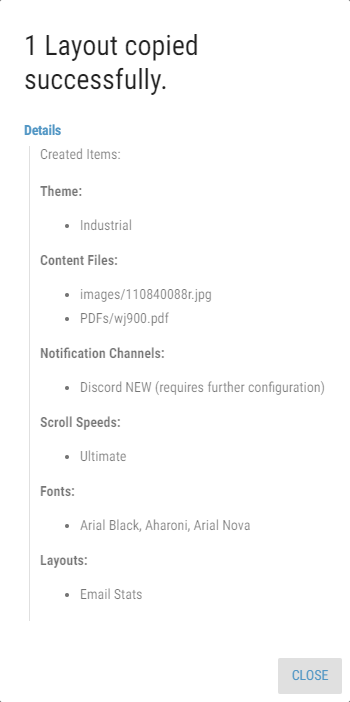

Copying Layouts¶
Existing Layouts can be copied into any available Business Unit, using the Copy Layouts dialog. The button, used to open the dialog, is available only when at least one Layout is selected in the Layout list.
Figure 1: Copy dialog
The dialog contains the following options:
- Target Business Unit
The Business Unit, into which the selected Layout should be copied. Only Business Units that are available to the user are displayed.
When target Business Unit already contains a Layout with the same name as the one that is being copied, the copied Layout is numbered.
- Keep Parameters
Whether the calculation parameters in Layout should be copied. If enabled, parameters of every calculation, located in the Layout are copied.
- Keep Notification Message Recipients
Whether the notification message recipients in Layout should be copied.
- Copy as Draft
Whether the layout should be copied as a draft (layout won’t be published).
These options are available only when copying Layout into another Business Unit:
- Copy Parameter Groups
Available only when Keep Parameters is enabled
Whether parameter groups used in the layout should be copied. If a target Business Unit contains parameter group with the same name, this group is used instead of copying a new one. If the Parameter Group is copied into a different Business Unit, values are filtered based on the Business Unit’s configured filters.
- Copy Notification Message Templates
Whether notification message templates used by the Layout should also be copied.
- Copy Nested Widget Data Filter Values
Whether data filter values configured in the nested widget should be copied.
- Copy Theme if does not exist
Whether theme used by the Layout should also be copied if such theme does not already exist in the target Business Unit.
- Content Files
Whether content files, such as audio files, pdf files or images used in the Layout should be copied. Available options are:
- Do Not Copy
The content files will not be copied.
If Layout contains sources which references content from its own Business Unit, the copied Layout will be marked as invalid, unless default value is applicable. For administrators, invalid Layouts are marked red in the Layout list. Any other users are not able to see invalid Layouts in the Layout list.
- Copy And Replace If Exists
The content files will be copied. If there are already files with the same name but different size in the target Business Unit, they will be replaced.
- Copy And Rename If Exists
The content files will be copied. If there are already files with the same name but different size in the target Business Unit, copied files will be numbered (adding “(xyz)” at the end of the file name).
- Copy If Not Exists
The content files will be copied. If there are already files with the same name but different size in the target Business Unit, the content files will not be copied.
When the Layout copying is done, the report dialog appears. This dialog has only informative character. Copied Layouts, content files and other associated entities are listed in Details group.
Figure 2: Copy Report
Copying Enums - During copying of Layouts or segments into another Business Unit, enumerations with the same configuration are used if found. Otherwise, new record is created as a copy of source enumeration.
Two display formats are configured the same way if both have the same format.
Copying Notification Channels - During copying of notification channels into another Business Unit, notification channels of the same type are used if found. Otherwise, new channel is created. Settings of newly created channels have to be configured manually.
Invalid Layout
If an invalid layout is created during copying, it is marked red in the copy report.
After copying is done, it is recommended to review the invalid layouts and track the issue via the items list.